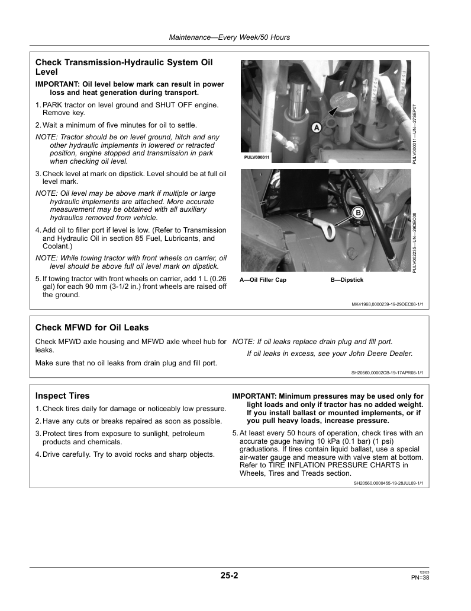
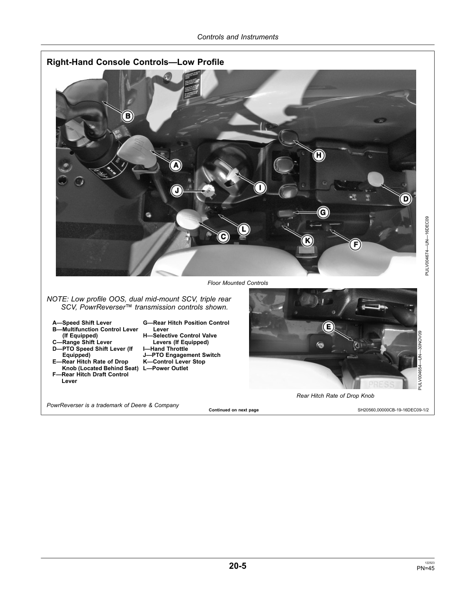

Take your seat—or step around the rear
Your first task
Find one transmission control, one remote-hydraulic control, and one hitch control. Explain why the rear hydraulic couplers and the PTO do different jobs. Explore the supplied photographs and the manual reference views before the learning check.
Transmission bench · PowrReverser 16F/16R
Select a range, gear, and travel direction. This is a stationary control demonstration: no vehicle movement or actual ground speed is calculated.
A1 · NEUTRAL · stationary teaching model
Four gears × four ranges = 16 combinations in each direction. PowrReverser uses an electrohydraulic directional reverser; its gear/range arrangement is not a hydrostatic drive or a CVT.
Try two gear/range combinations, then select Neutral.
Hydraulic circuit bench
A simplified double-acting cylinder illustrates a rear remote circuit. Select a function and watch which side receives oil. The drawing illustrates flow, not the full tractor plumbing or hitch circuit.
Neutral: the cylinder is stationary. The simplified open-center supply path returns pump flow to the reservoir.
Orange = pressure supply; blue = return. Neutral holding assumes a serviceable simplified valve/cylinder; do not rely on hydraulics alone to support a raised load. Flow animation is illustrative and does not estimate pressure, flow rate, or cycle time.
Demonstrate your understanding
Complete 15 questions, then explain the transmission evidence in your own words. Your first response to each item is recorded. Practice retries are available; this page is a formative activity, not a secure examination.
Explain your evidence
Reference video
The instructor-supplied video is included for viewing. Its contents and model configuration were not independently verified for this version. Control answers are based on the supplied Deere manual.
Open the video on YouTube. The video requires internet access; the simulation and reference images work offline.
Photographic sources
Transmission–hydraulic oil check · maintenance guide 25-2

Thirteen original instructor-supplied video stills are used in the interactive views. Their source video is linked above. The manual examples remain separate because the photographed electronic hitch console differs from the mechanical-hitch reference. Transmission identification in the simulator is based on the labeled manual configuration, not an unverified inference about the video tractor.
Deere reference viewer
Photographs are excerpts from John Deere operator’s manual OMSJ10032, covering multiple 5M models, including 5105M and 5105ML. The low-profile image is an example within this family, not proof of a specific tractor’s installed options. Front-console and pedal diagrams use related cab/OOS examples identified by the manual.

Source images and product names © Deere & Company. Teaching adaptation; not affiliated with or endorsed by John Deere. Retain source attribution. Consult the operator’s manual matching the actual tractor’s serial number and equipment.